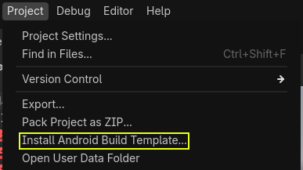
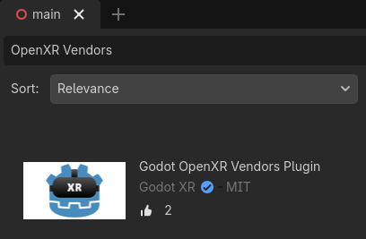

Deploying to Android
Setup
Most standalone headsets run on Android and OpenXR support is making its way to these platforms.
Before following the OpenXR-specific instructions here, you'll need to first setup your system to export to Android in general, including:
Installing OpenJDK 17
Installing Android Studio
Configuring the location of the Android SDK in Godot
See Exporting for Android for the full details, and return here when you've finished these steps.
Warning
While the Mobile Vulkan renderer has many optimizations targeted at mobile devices, we're still working out the kinks. It is highly advisable to use the compatibility renderer (OpenGL) for the time being when targeting Android based XR devices.
Gradle Android build
Note
Official support for the Android platform wasn't added to the OpenXR specification initially resulting in various vendors creating custom loaders to make OpenXR available on their headsets. While the long term expectation is that all vendors will adopt the official OpenXR loader, for now these loaders need to be added to your project.
In order to include the vendor-specific OpenXR loader into your project, you will need to setup a gradle Android build.
Select Install Android Build Template... from the Project menu:

This will create a folder called android inside of your project that contains all the runtime files needed on Android. You can now customize this installation. Godot won't show this in the editor but you can find it with a file browser.
You can read more about gradle builds here: Gradle builds for Android.
Installing the vendors plugin
The vendors plugin can be downloaded from the Asset Store, search for "OpenXR vendors".

You will find the installed files inside the addons folder. Alternatively you can manually install the vendors plugin by downloading it from the release page here. You will need to copy the assets/addons/godotopenxrvendors folder from the zip file into your projects addons folder.
You can find the main repository of the vendors plugin here.
Note
From Godot 4.6 onwards, the vendor plugin is now an optional but recommended plugin. Godot can export directly to most Android-compatible devices. This can be useful for demonstration and tutorial projects where a single APK can be deployed to multiple devices. The vendor plugin unlocks vendor specific implementations and settings, and may be required to release on app stores.
Creating the export presets
You will need to setup a separate export preset for each device, as each device will need its own loader included.
Open Project and select Export... Click on Add.. and select Android. Next change the name of the export preset for the device you're setting this up for, say Meta Quest. And enable Use Gradle Build. Next change the XR Mode to OpenXR. If you want to use one-click deploy (described below), ensure that Runnable is enabled.
If you've installed the vendor plugin you will also find entries for the different headsets under XR Features. Select the entry for your headset, if you see one. Otherwise, enable the Khronos plugin.

Scroll to the bottom of the list and you'll find additional XR feature sections, currently only Meta XR Features, Pico XR Features, Magicleap XR Features and Khronos XR Features for HTC are available. You will need to select the appropriate settings if you wish to use these features.
Running on your device from the Godot editor
If you've setup your export settings as described above, and your headset is connected to your computer and correctly recognized, you can launch it directly from the Godot editor using One-click deploy:

For some devices on some platforms, you may need to perform some extra steps in order for your device to be recognized correctly, so be sure to check the developer documentation from your headset vendor.
For example, with the Meta Quest 2, you need to enable developer mode on the headset, and if you're on Windows, you'll need to install special ADB drivers. See the official Meta Quest developer documentation for more details.
If you're having any issues with one-click deploy, check the Troubleshooting section.